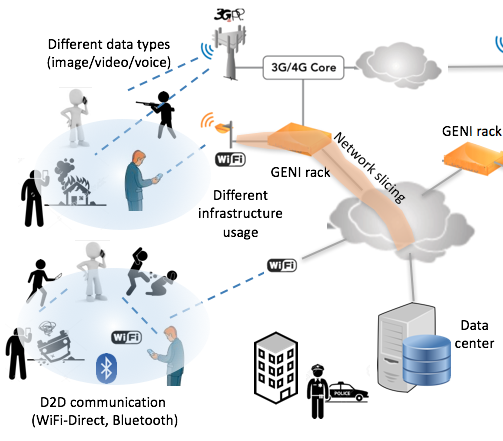

|
Recent Projects
-
Device-Free WiFi Sensing based Occupancy Detection in Buildings
Occupancy detection in buildings aims to provide real-time access to occupancy counts in different zones of the buildings. It is essential and crucial to improve the efficiency in various applications such as building management systems (BMS) and patient monitoring in hospitals.
 The overall goal of the proposed research is to develop a device-free WiFi sensing based building occupancy map leveraging the properties of a new lightweight and standalone IoT-based tool we developed for collecting Channel State Information (CSI) of wireless signals. To this end, we will deploy several of these IoT microcontrollers (i.e., ESP32) and let them collect and analyze the WiFi signals from existing WiFi APs inside the VCU buildings in order to find out the number of people in several zones of the building without having any device on them (i.e., device-free). We will also let these ESP32s communicate with each other in an ad-hoc fashion through a self-managed network and share their information to increase estimation accuracy. [More about ESP32 CSI tool]
The overall goal of the proposed research is to develop a device-free WiFi sensing based building occupancy map leveraging the properties of a new lightweight and standalone IoT-based tool we developed for collecting Channel State Information (CSI) of wireless signals. To this end, we will deploy several of these IoT microcontrollers (i.e., ESP32) and let them collect and analyze the WiFi signals from existing WiFi APs inside the VCU buildings in order to find out the number of people in several zones of the building without having any device on them (i.e., device-free). We will also let these ESP32s communicate with each other in an ad-hoc fashion through a self-managed network and share their information to increase estimation accuracy. [More about ESP32 CSI tool]
-
Improving Spectrum Efficiency for Hyper-Dense IoT Networks
The emerging Internet of Things (IoT) technology will enable a whole new set of applications, imposing far reaching influence on many aspects
 of society, including management of health, transportation, agriculture, safety and emergency and disaster response.
At the same time, the massive growth of IoT deployments poses several grand challenges to the wireless industry for their successful operation. This project aims to develop novel IoT architectures and algorithms to enable large-scale IoT deployments. In particular, it introduces holistic, cross-layer design framework and protocols for improving spectral/energy efficiency and latency of massive IoT networks. We specifically work on core network connection efficiency for IoT networks which requires rethinking the core network functions for connection of massive IoT as they are not designed considering the IoT traffic characteristics. The project will develop and rigorously study an aggregation based connectivity model to manage multiple IoT device traffic using the same resources (i.e., bearers). For efficient groupings of the IoT devices that will share the same connection, researchers will use efficient clustering methods, while giving preference to the interference minimizing groups. [Read more]
of society, including management of health, transportation, agriculture, safety and emergency and disaster response.
At the same time, the massive growth of IoT deployments poses several grand challenges to the wireless industry for their successful operation. This project aims to develop novel IoT architectures and algorithms to enable large-scale IoT deployments. In particular, it introduces holistic, cross-layer design framework and protocols for improving spectral/energy efficiency and latency of massive IoT networks. We specifically work on core network connection efficiency for IoT networks which requires rethinking the core network functions for connection of massive IoT as they are not designed considering the IoT traffic characteristics. The project will develop and rigorously study an aggregation based connectivity model to manage multiple IoT device traffic using the same resources (i.e., bearers). For efficient groupings of the IoT devices that will share the same connection, researchers will use efficient clustering methods, while giving preference to the interference minimizing groups. [Read more]
-
Peer-to-Peer Energy Sharing in Mobile Networks
 Energy is a scarce resource in wireless communication and mobile networking. Recently, energy sharing or energy harvesting through wired or
wireless technologies have emerged as a promising alternative for enhancing the usage of energy and prolonging the network lifetime.
The applications of energy sharing is broad and can be applied to different kind of mobile networks including Wireless Sensor Networks (WSN), Mobile Social Networks (MSN), Mobile Ad-Hoc Networks (MANET), and Vehicular Ad-Hoc Networks (VANET).
For example, in mobile social networks consisting of smartphones of users, peer-to-peer energy sharing among users can help reduce the burden of traditional cord-based charging process (ICC), however this requires building of a crowd charging system (ICCCN) among users with necessary incentives (e.g., forming buddies (WCNC)). Similarly, in vehicular networks, vehicle-to-vehicle (V2V) charge sharing among electric vehicles can help mitigate the range anxiety of drivers (VTC), however, it requires efficient matching of suppliers and demanders (VTC) and integration of privacy preservation mechanisms (Adhoc).
Energy is a scarce resource in wireless communication and mobile networking. Recently, energy sharing or energy harvesting through wired or
wireless technologies have emerged as a promising alternative for enhancing the usage of energy and prolonging the network lifetime.
The applications of energy sharing is broad and can be applied to different kind of mobile networks including Wireless Sensor Networks (WSN), Mobile Social Networks (MSN), Mobile Ad-Hoc Networks (MANET), and Vehicular Ad-Hoc Networks (VANET).
For example, in mobile social networks consisting of smartphones of users, peer-to-peer energy sharing among users can help reduce the burden of traditional cord-based charging process (ICC), however this requires building of a crowd charging system (ICCCN) among users with necessary incentives (e.g., forming buddies (WCNC)). Similarly, in vehicular networks, vehicle-to-vehicle (V2V) charge sharing among electric vehicles can help mitigate the range anxiety of drivers (VTC), however, it requires efficient matching of suppliers and demanders (VTC) and integration of privacy preservation mechanisms (Adhoc).
-
Rapid and Resilient Critical Data Sourcing for Public Safety and Emergency Response
In public safety and emergency response, the key for a successful recovery is on-time and reliable communication between the people reporting the incident and the emergency management authorities.

Recently, crowd sourcing applications have proven to be promising tools to gather information with tremendous participation from the crowd. In emergency scenarios, however, such crowd sourcing solutions should be robust and resilient as the network could be congested or the underlying cellular infrastructure is damaged or temporarily lost. This project addresses these challenges by introducing a novel framework that integrates various technologies and tools for modeling and operation of large-scale crowd sourcing-based emergency response systems.
More specifically, it investigates (i) large-scale critical data collection via a mobile app and management process to be used in the investigation of an emergency incident, (ii) near-real-time processing of the gathered heterogeneous data in a cloud computing environment for critical information extraction such as faces of people in the videos and photos, (iii) adoption of D2D-based communication as a complementary component to improve system resilience in case of congestion's and failures in network infrastructure, and (iv) utilization of Global Environment for Network Innovations (GENI) network slices as dedicated bandwidth for time-sensitive communication in emergency response as well as to enhance wide area resilience of the system.
|
|